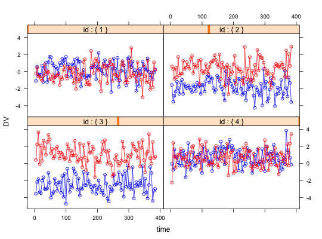

Multilevel data occur when observations are nested within groups. This can produce correlational structures that are sometimes difficult to understand. These two simulations allow for demonstrations that correlations within groups do not imply, nor are implied by, correlations between group means. The correlations of aggregated data is sometimes called an 'ecological correlation'. That group level and individual level correlations are independent makes such inferences problematic. Within individual data are simulated in sim.multi with a variety of possible within person structures.
sim.multi(n.obs=4,nvar = 2, nfact=2, ntrials=96, days=16, mu=0,sigma=1, fact=NULL, loading=.9, phi=0,phi.i=NULL,beta.i=0,mu.i=0, sigma.i = 1,sin.i=0, cos.i=0, AR1=0, f.i=NULL, plot=TRUE) sim.multilevel(nvar = 9, ngroups = 4, ncases = 16, rwg, rbg, eta)
| n.obs | How many subjects should be simulated. Four allows for nice graphics, use more to examine structural properties. |
|---|---|
| nvar | How many variables are to be simulated? |
| nfact | How many factors are simulated,defaults to 2 |
| ntrials | How many observations per subject (across time) |
| days | How many days do these observations reflect? This is relevant if we are adding sine and cosines to the model to model diurnal rhythms. |
| mu | The grand mean for each variable across subjects |
| sigma | The between person standard deviation |
| fact | if NULL, a two factor model is created with loadings of loading or zero in a simple structure form |
| loading | If fact is NULL, then we create a factor model with loading or zeros |
| phi | The between person factor intercorrelation |
| phi.i | The within person factor intercorrelations |
| beta.i | Within subject rate of change over trials |
| mu.i | The within subject mean for each subject |
| sigma.i | the within subject standard deviation |
| sin.i | To what extent should we diurnally vary by subject? |
| cos.i | This will specify the within subject diurnal phase (lag) |
| AR1 | Auto regressive value implies error at time t +1 is partly a function of error at time t. |
| f.i | Factor loadings for each subject |
| plot | If TRUE, create a lattice plot for each subject |
| ngroups | The number of groups to simulate |
| ncases | The number of simulated cases |
| rwg | The within group correlational structure |
| rbg | The between group correlational structure |
| eta | The correlation of the data with the within data |
The basic concepts of the independence of within group and between group correlations is discussed very clearly by Pedhazur (1997) as well as by Bliese (2009). sim.multi generates within subject data to model the traditional two level structure of multilevel data.
This is meant to show how within subject data measured over ntrials can vary independently within and between subjects. Furthermore, several variables can correlate within subjects show a person by person factor structure.
Factor scores for n.obs subjects are created for nfact factors with loadings on nvar variables. A simple structure model is assumed, so that the loadings on nvar/fact are set to loading for each factor, the others are set to 0. Factors are allowed to correlate phi between subjects and phi.i for each subject. (Which can be different for each subject).
Scores can change over time with a slope of beta.i and can vary diurnally as a function of sine and cosine of time (24 hours/day converted to radians). Error is added to every trial and can be related across trials with a lag of 1. Thus, if we set AR1=1, then the errors at time t = error + error at t -1. This will lead to auto correlations of about .5. (See autoR ).
sim.multilevel merely simulates pooled correlations (mixtures of between group and within group correlations) to allow for a better understanding of the problems inherent in multi-level modeling.
Data (wg) are created with a particular within group structure (rwg). Independent data (bg) are also created with a between group structure (rbg). Note that although there are ncases rows to this data matrix, there are only ngroups independent cases. That is, every ngroups case is a repeat. The resulting data frame (xy) is a weighted sum of the wg and bg. This is the inverse procedure for estimating estimating rwg and rbg from an observed rxy which is done by the statsBy function.
\(r_{xy} = \eta_{x_{within}} * \eta_{y_{within}} * r_{xy_{within}} + \eta_{x_{between}} * \eta_{y_{between}} * r_{xy_{between}} \)
A data frame for further analysis using statsBy including nvar variable values for each of n.obs subjects (id) for ntrials.
A matrix (ncases * nvar) of simulated within group scores
A matrix (ncases * nvar) of simulated between group scores
A matrix ncases * (nvar +1) of pooled data
P. D. Bliese. Multilevel modeling in R (2.3) a brief introduction to R, the multilevel package and the nlme package, 2009.
Pedhazur, E.J. (1997) Multiple regression in behavioral research: explanation and prediction. Harcourt Brace.
Revelle, W. An introduction to psychometric theory with applications in R (in prep) Springer. Draft chapters available at http://personality-project.org/r/book/
statsBy for the decomposition of multi level data and withinBetween for an example data set.
#First, show a few results from sim.multi x.df <- sim.multi() #the default is 4 subjects for two variables# over 16 days measured 6 times/day #sb <- statsBy(x.df,group ="id",cors=TRUE) #round(sb$within,2) #show the within subject correlations #get some parameters to simulate data(withinBetween) wb.stats <- statsBy(withinBetween,"Group") rwg <- wb.stats$rwg rbg <- wb.stats$rbg eta <- rep(.5,9) #simulate them. Try this again to see how it changes XY <- sim.multilevel(ncases=100,ngroups=10,rwg=rwg,rbg=rbg,eta=eta) lowerCor(XY$wg) #based upon 89 df#> C1 C2 C3 C4 C5 C6 C7 C8 C9 #> R1 1.00 #> R2 0.08 1.00 #> R3 -1.00 -0.08 1.00 #> R4 1.00 0.08 -1.00 1.00 #> R5 0.08 1.00 -0.08 0.08 1.00 #> R6 -1.00 -0.08 1.00 -1.00 -0.08 1.00 #> R7 1.00 0.08 -1.00 1.00 0.08 -1.00 1.00 #> R8 0.08 1.00 -0.08 0.08 1.00 -0.08 0.08 1.00 #> R9 -1.00 -0.08 1.00 -1.00 -0.08 1.00 -1.00 -0.08 1.00#> C1 C2 C3 C4 C5 C6 C7 C8 C9 #> R1 1.00 #> R2 1.00 1.00 #> R3 1.00 1.00 1.00 #> R4 -0.12 -0.12 -0.12 1.00 #> R5 -0.12 -0.12 -0.12 1.00 1.00 #> R6 -0.12 -0.12 -0.12 1.00 1.00 1.00 #> R7 -1.00 -1.00 -1.00 0.12 0.12 0.12 1.00 #> R8 -1.00 -1.00 -1.00 0.12 0.12 0.12 1.00 1.00 #> R9 -1.00 -1.00 -1.00 0.12 0.12 0.12 1.00 1.00 1.00